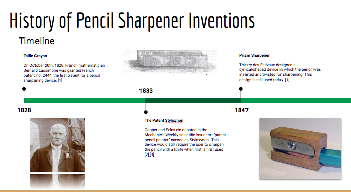
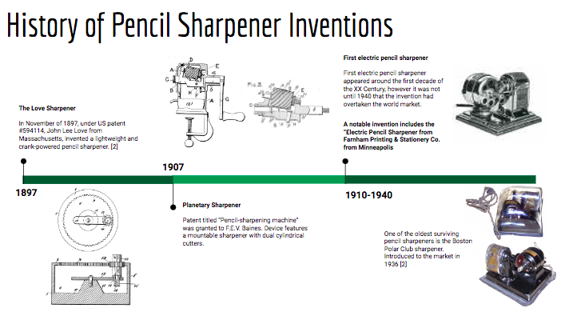
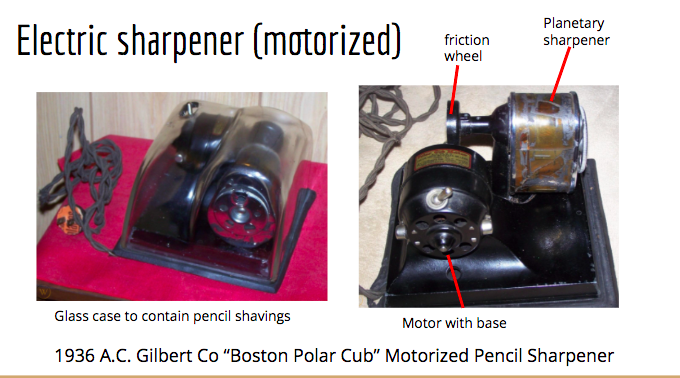
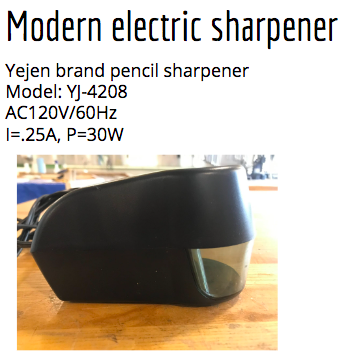
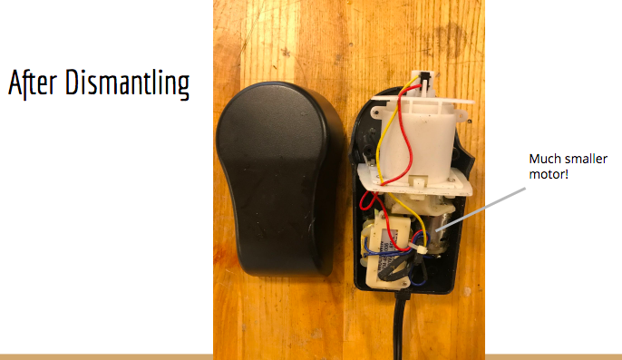
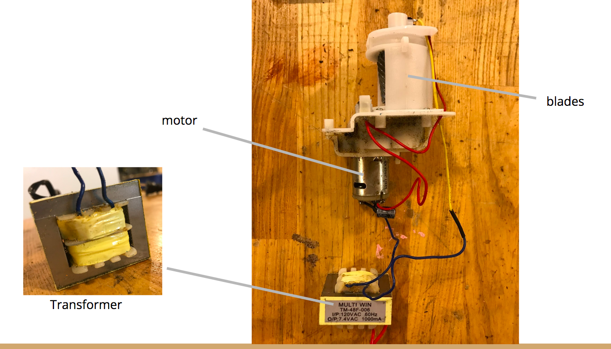
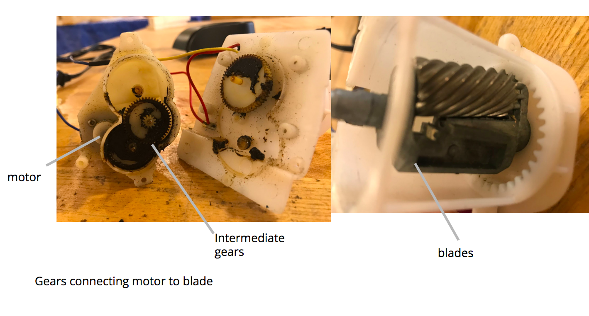
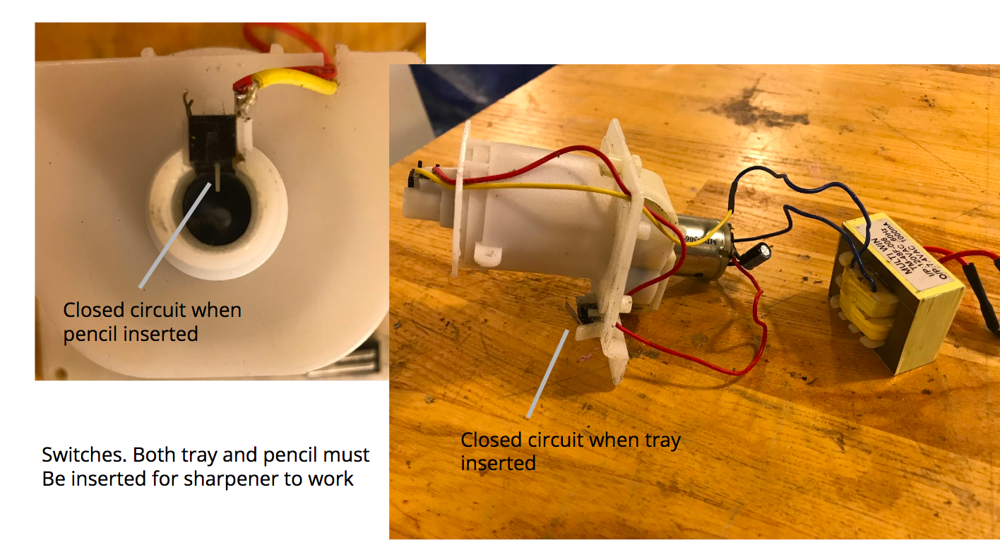

GOAL The purpose of this project was to select a household object and to research its design evolution. HISTORY    DISASSEMBLY  Side profile of Sharpener  DESIGN EVALUATION Modern electric sharpeners essentially operate in the same way as the Gilbert sharpener presented above. The largest difference is having a more compact motor and plastic rather than glass casing.  Close up of gear reduction intended to output lower speed and higher torque. The Blades spin around a motionless pencil tip.  To allow the user to keep the sharpener plugged in continuously, there are two switches. The first is to only close the circuit when a pencil is inserted. The second is to close the circuit when the tray to collect shavings is fully seated in the sharpener casing. 